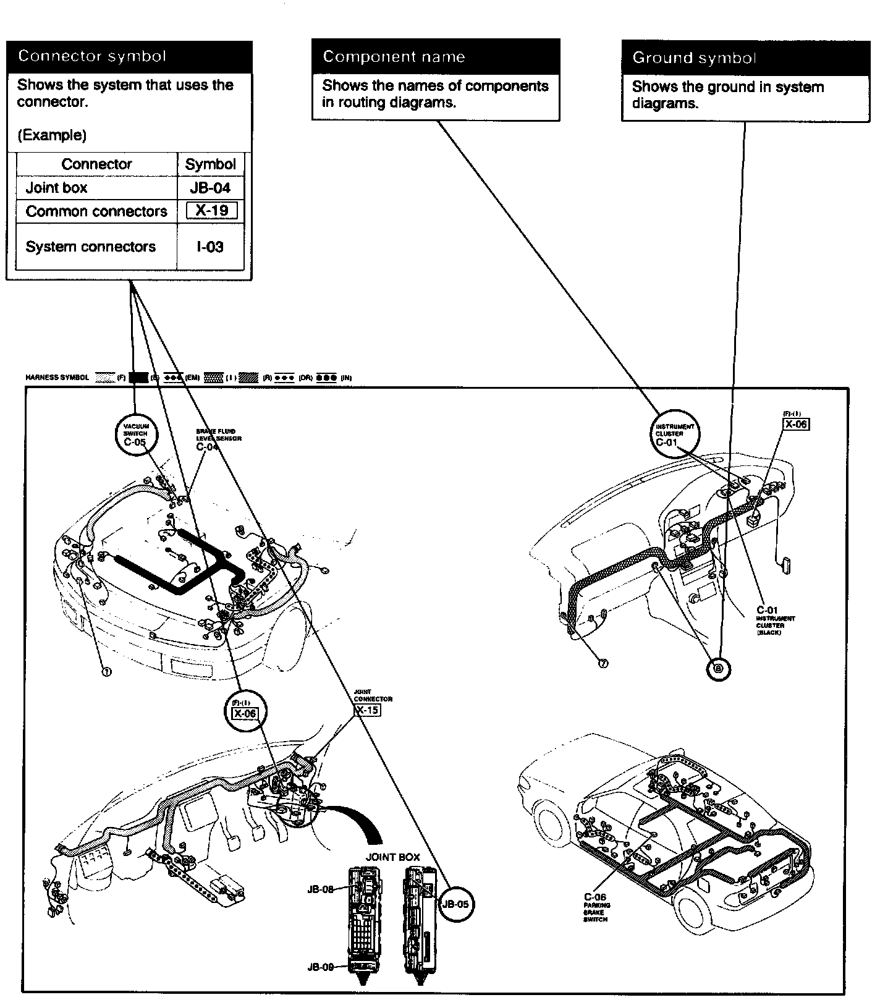

Operation CHARM
: Car repair manuals for everyone.
Home
>>
Mazda
>>
1999
>>
MX-5 Miata L4-1.8L DOHC
>>
Repair and Diagnosis
>>
Windows and Glass
>>
Windows
>>
Diagrams
>>
Diagram Information and Instructions
>>
Routing Diagram
Routing Diagram

^
The routing diagram shows where electrical components are on the system circuit diagram by call out line and connector symbols.